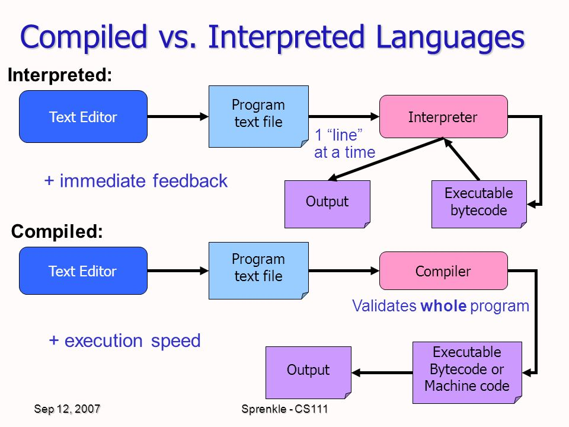

What are Complied Languages?Machine language, which is the language of the central processing unit, is the only language that computers can execute. Any programming language implementation aims to convert a source program into machine code that can be executed by the CPU. Before translating the intermediate representation to machine language, all language implementations convert a source program into some intermediate representation. The compilation is the most direct technique of turning a program to machine language. Before a program written in a compiled language may execute, it must be translated into a different format. Before being executed, the source code must be converted into machine-readable instructions. Computed languages, in short, are languages whose implementations are often compilers rather than interpreters. |

|
|  |
What are Interpreted languages?An interpreter is a program written in a different language that has been compiled into machine-readable code. The interpreter is a machine language software that is written to read and interpret source programs from the interpreted language. On the other hand, an interpreted language does not compile the source code into machine language before running it. It simply interprets the code in real-time. You don't reap the benefits or drawbacks of compilation errors as a result. An interpreter, which accepts the source code and executes one instruction at a time, is required for interpreted languages. You run the interpreter when you run an interpreted source program. An interpreter is a machine-language software that runs all of your programs that you can write in the interpreted language. |